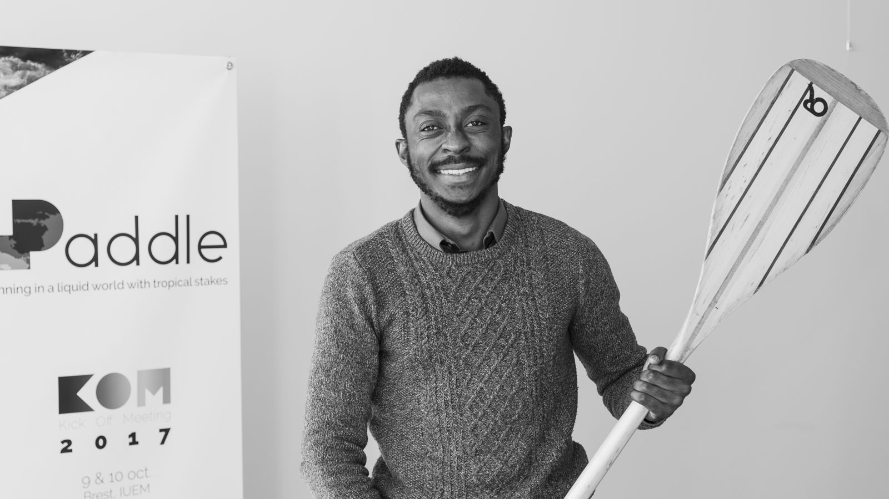

Biography
Philippe FOTSO
Juriste
I was born in 1987 in Nkongsamba, Cameroun. After studying law in Douala University, I became a lawyer. I worked in Douala and Yaoundé as a lawyer.
I arrived in France ....
 L'homme, c'est les autres hommes.
L'homme, c'est les autres hommes.